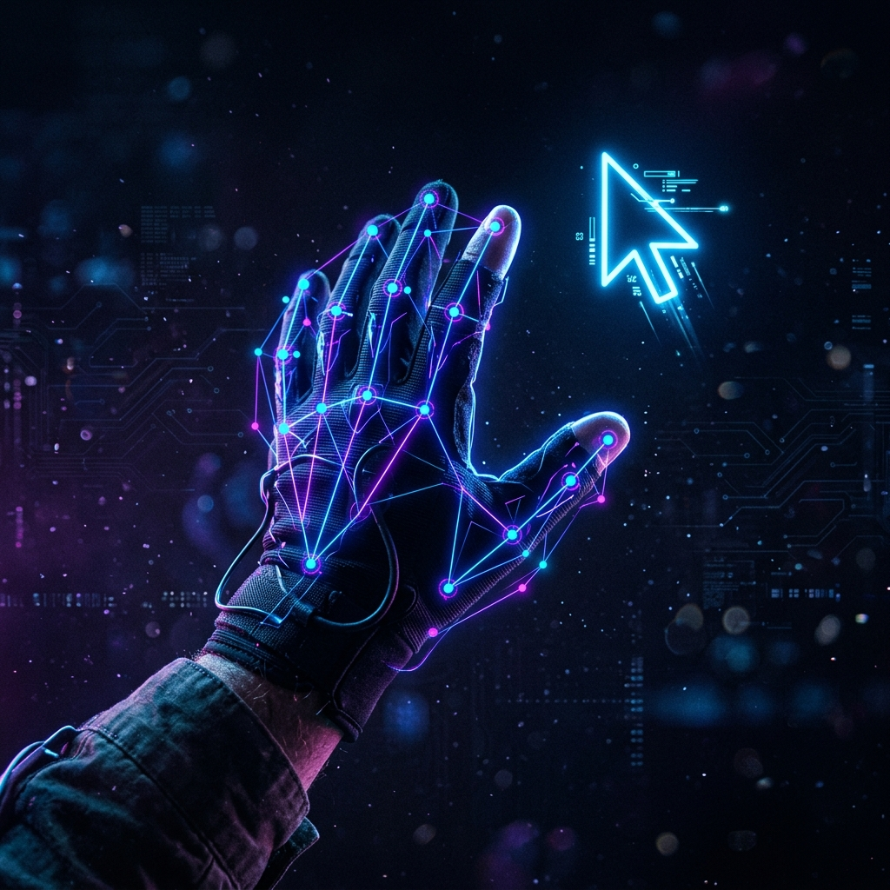
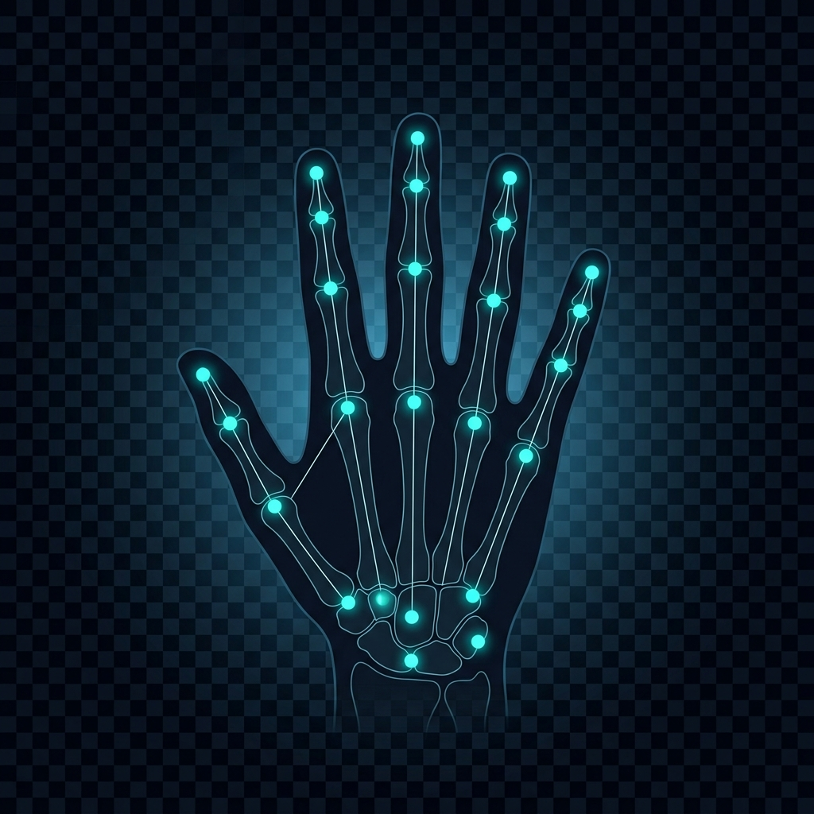
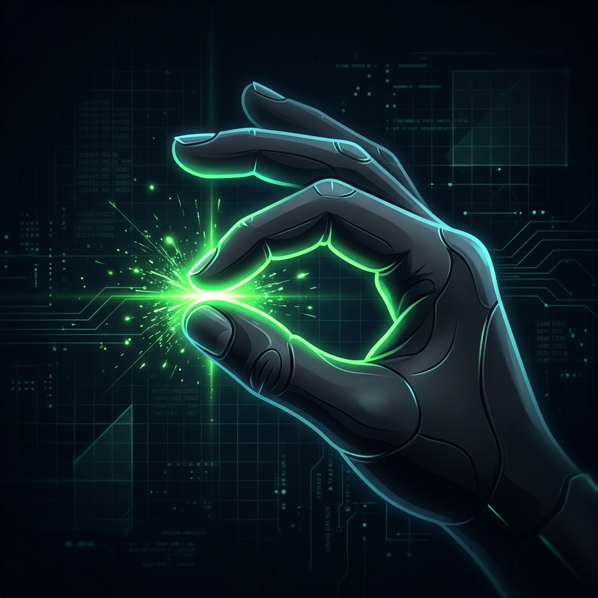

Interactive
Live Demo
Start the hand tracker and see it working in real-time right here
Click Start Tracking to activate your webcam
The ML pipeline will detect your hand and stream the results here
Hand2Cursor turns your standard webcam into an intelligent input device. Point, click, and drag with seamless hand gestures, completely eliminating the need for physical hardware.

Start the hand tracker and see it working in real-time right here
Click Start Tracking to activate your webcam
The ML pipeline will detect your hand and stream the results here
Everything you need for a seamless touchless experience
Detects and tracks 21 hand landmarks per frame using Google MediaPipe's state-of-the-art ML pipeline.
Your index fingertip becomes the mouse pointer, mapped precisely from webcam space to full screen coordinates.
Pinch thumb + index for left click. Add thumb + middle pinch simultaneously for right click.
Exponential Moving Average filter eliminates jitter for precise, smooth cursor motion across the screen.
Timestamp-based cooldown prevents accidental repeated clicks during sustained pinch gestures.
Live gesture visualization with connection lines, pinch indicators, and expanding ring click animations.
A five-stage real-time processing pipeline
OpenCV captures live frames from your webcam at 640×480, then flips horizontally for a natural mirror view.
Each BGR frame is converted to RGB and fed into MediaPipe's HandLandmarker, which outputs 21 normalized (x, y, z) landmarks per hand.
Euclidean distance between fingertip landmarks determines pinch gestures. Single pinch = left click, double pinch = right click.
Index finger position within a virtual boundary is normalized and mapped to full screen coordinates with configurable sensitivity.
Smoothed coordinates drive PyAutoGUI to move the system cursor or perform clicks, with cooldown logic preventing duplicates.

21-Point Landmark Mesh
Pinch Gesture DetectionClean modular design with three core components
OpenCV VideoCapture
MediaPipe Tasks API
hand_tracker.pyPyAutoGUI Actions
gesture_controller.pyOS Mouse Events
Intuitive hand movements mapped to mouse actions
Point with your index finger. The fingertip position controls the mouse pointer across your entire screen.
Pinch your thumb and index finger together. When the distance drops below the threshold, a left click fires.
Simultaneously pinch thumb+index and thumb+middle fingers. Both pinch conditions must be active at once.
Close all fingers into a fist to initiate drag. Release to drop. Experimental feature for advanced control.
Three steps to touchless control
git clone https://github.com/mayankgarg00/Hand2Cursor.git
cd Hand2Cursor
python -m venv venv
venv\Scripts\activate
pip install -r requirements.txtDownload the hand_landmarker.task model file from MediaPipe and place it in the project root directory.
python main.pyPress Q to quit. Edit constants in main.py to adjust sensitivity, smoothing, and thresholds.
| Parameter | Default | Description |
|---|---|---|
CAMERA_INDEX | 0 | Webcam device index |
FRAME_MARGIN | 80 | Virtual boundary margin in pixels |
SMOOTHING | 0.35 | EMA factor (lower = smoother) |
CLICK_COOLDOWN | 0.4s | Minimum interval between clicks |
PINCH_THRESHOLD | 40px | Distance to trigger a pinch |
SENSITIVITY | 1.0 | Cursor speed multiplier |
Core runtime
Video capture & rendering
Hand landmark detection
System mouse control
Numerical operations